1080×1920，58.2 秒，Raya（Sped Up）從第 14 小節切入，第 20 小節最重的一拍落在第 ③ 筆。每張都是實際畫面，K 線與數字是幣安真實成交。每筆 8 拍：鎖定 → 回放 → 堆疊亮起 → 開火 → 回放 → 結果。
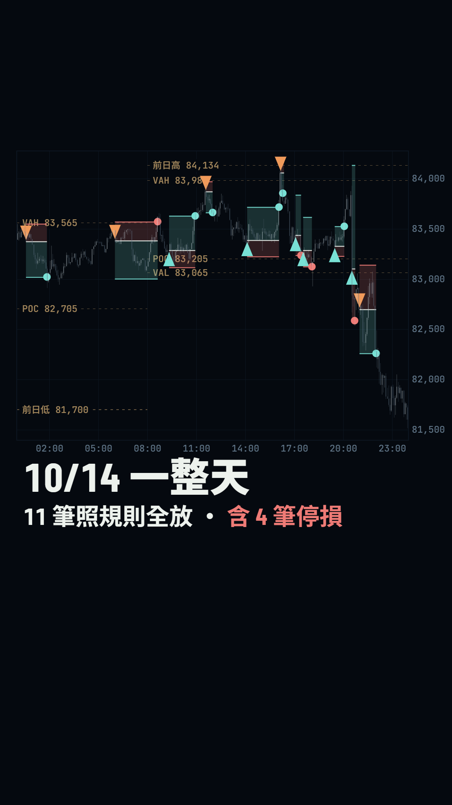
第 0 格就是成品：全天 K 線淡色、11 筆的進場與結果都標好，「10/14 一整天 · 11 筆照規則全放 · 含 4 筆停損」。下一拍鏡頭俯衝進 00:33。
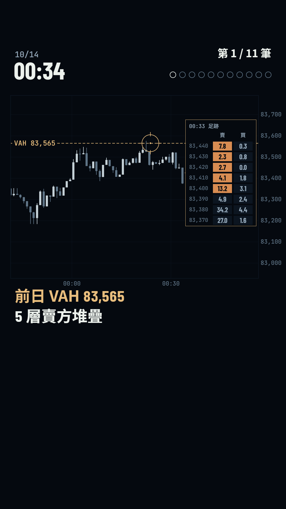
金色掃描線落到 VAH 83,565，準星卡住；回放到 00:33，右側打開那根 K 的足跡，5 層賣方堆疊一格一格亮起。
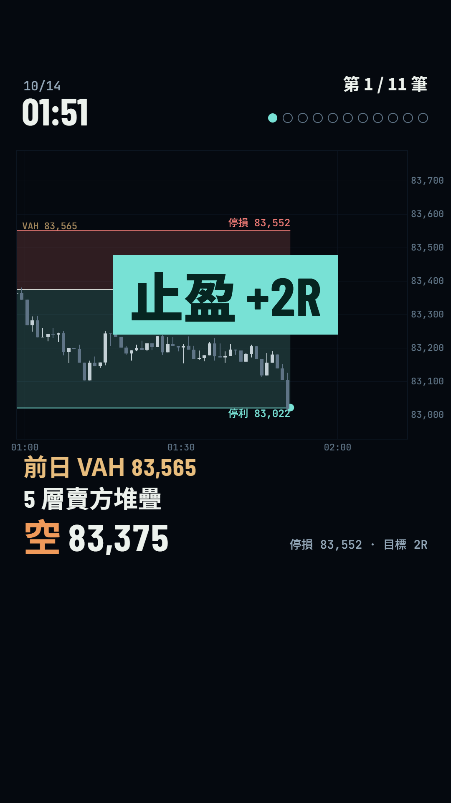
開火時圖表後座力三格、進場圓環擴散，停損停利框卡上；回放到 01:51 打到停利，整個圖閃一下青綠，止盈章砸下，記分點填色。
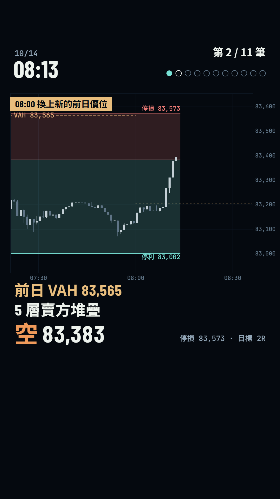
同一條 VAH 再空一次；回放經過 08:00 時，舊的價位線收掉、新的 POC 83,205 與 VAL 83,065 從 08:00 畫出來。
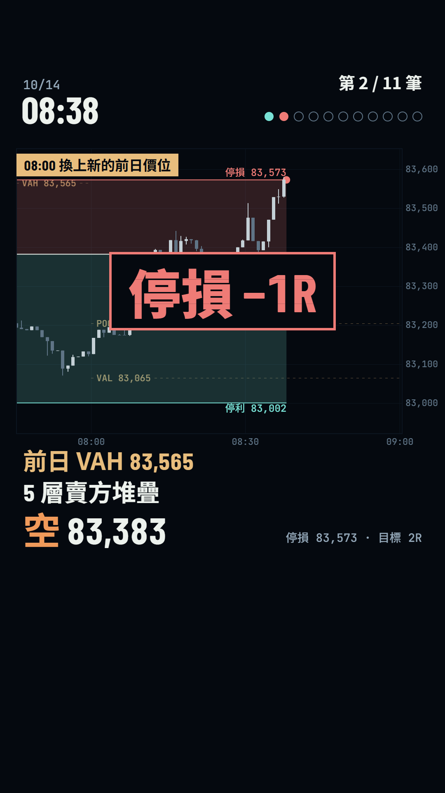
08:38 打到停損：紅框章出現後故障三格，記分點變紅。停損和止盈一樣節奏、一樣大小。
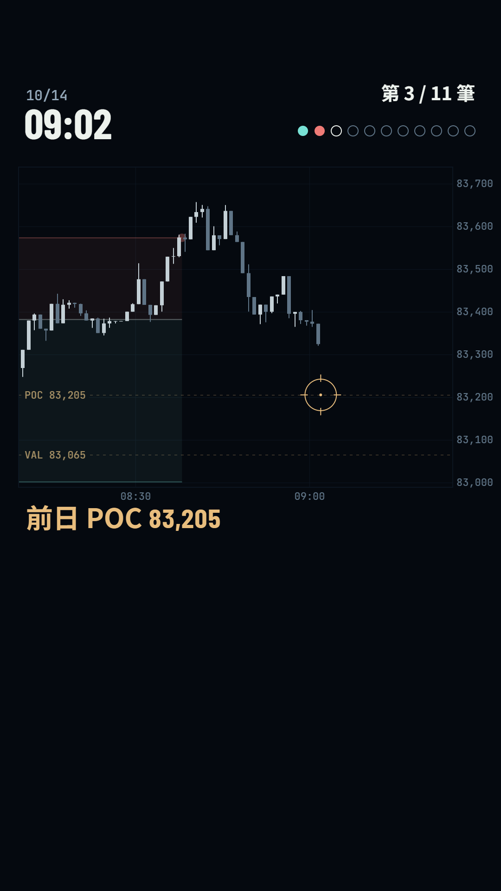
歌曲第 20 小節強拍：全畫面亮一格，鏡頭飛到 09:00，準星從右邊滑到前日 POC 83,205。之後 ③ ④ ⑤ ⑥ 連續止盈。
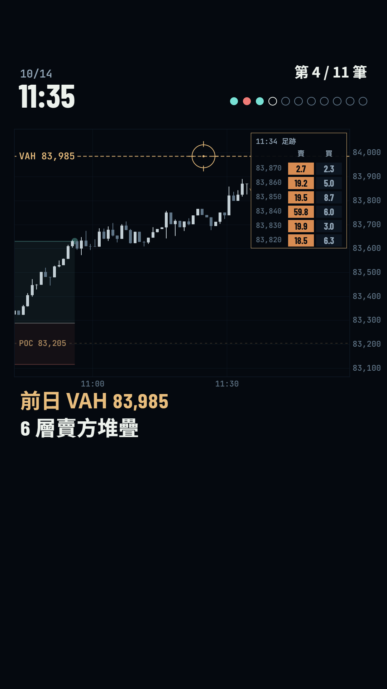
11:34 碰到新的前日 VAH 83,985，足跡裡 6 層賣方堆疊，空 83,871。
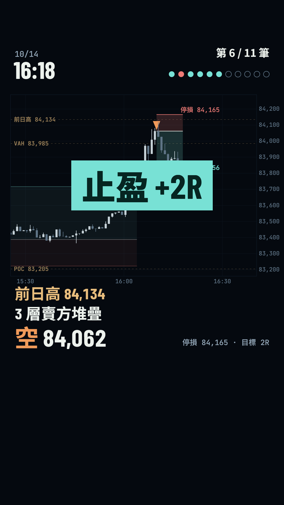
16:09 刺穿前日高 84,134 後收回，3 層賣方，9 分鐘打到停利；這一筆結束剛好是歌曲進入抽空段。
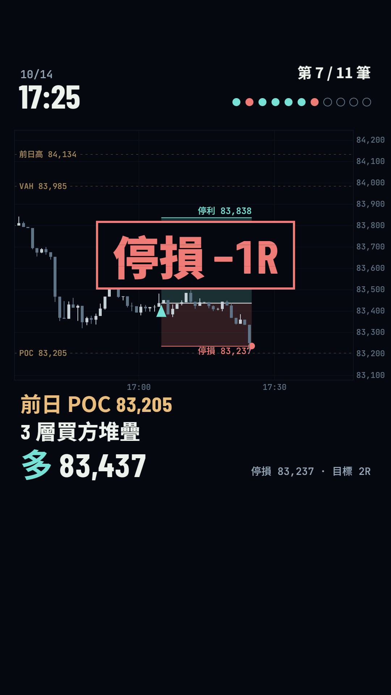
17:04、17:32 在前日 POC 接多都停損，音樂正好抽掉；之後 ⑨ 19:28 止盈、⑩ 20:31 停損（同樣節奏，略過不列）。
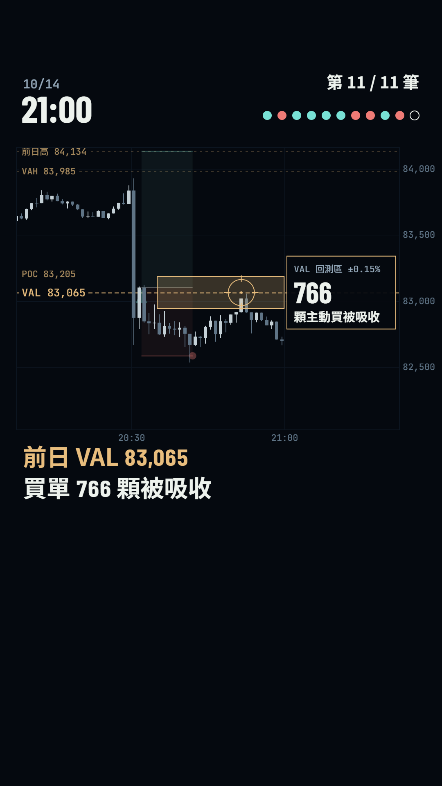
跌破前日 VAL 後反彈回測，回測區（±0.15%）裡 766 顆主動買被吸收，價格推不上去 → 空 82,700。
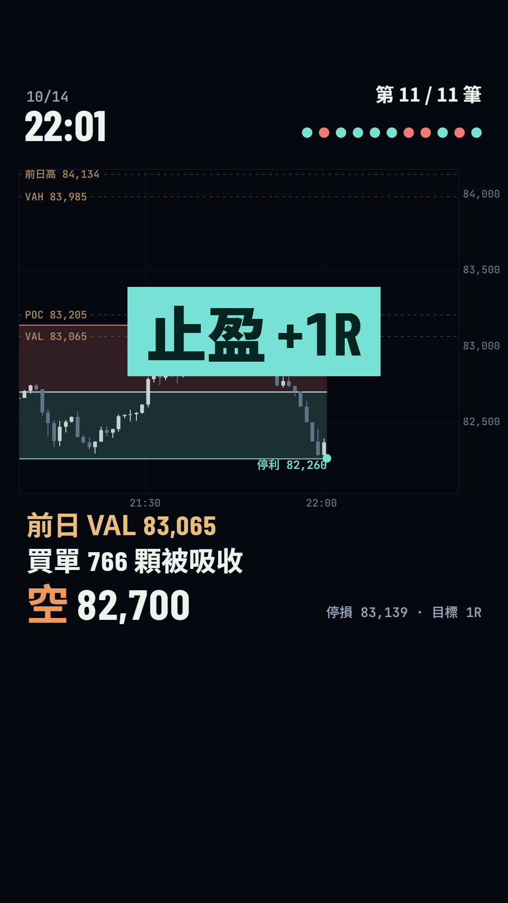
22:01 打到停利，11 個記分點全部填滿。
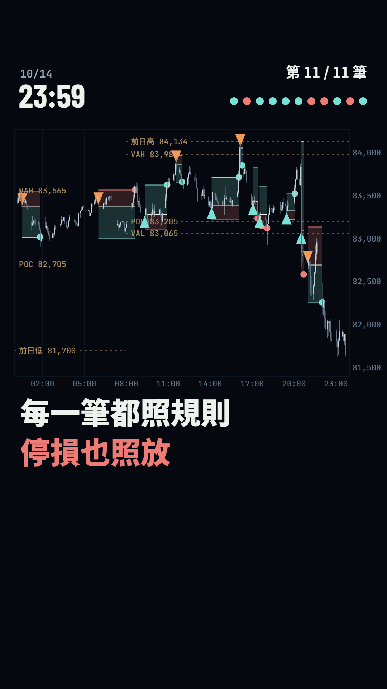
鏡頭退回整天，K 線全部實色、11 筆全部亮著；「每一筆都照規則」「停損也照放」。
MetaBear 標誌彈入、metabear.io、「到價位、看堆疊、才開單」、「依幣安真實成交資料回放 · 非投資建議」，最後 1.5 秒音樂淡出。